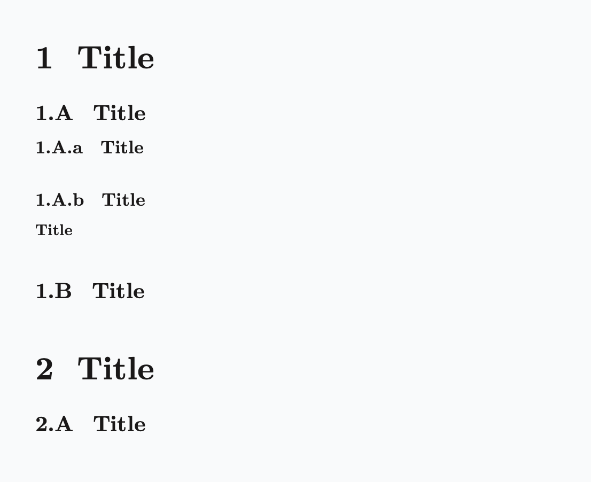
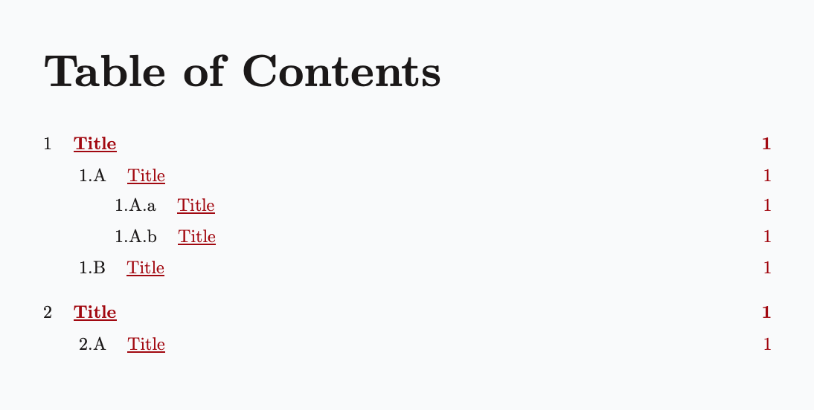
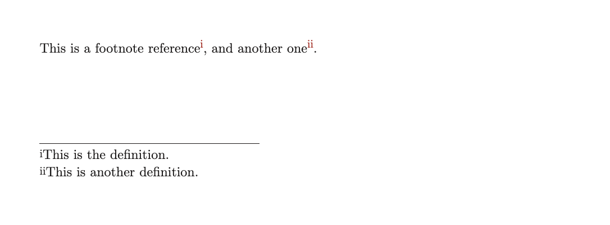

/

本页目录
编号
.numbering 函数设置文档的全局编号配置。以下元素可以被编号：
该配置由一个 Dictionary 表示。以下代码片段展示了完整的配置模式，其中所有条目都是可选的：
.numbering
- headings: <format>
- figures: <format>
- tables: <format>
- equations: <format>
- code: <format>
- footnotes: <format>每个格式参数接受 none，或者一个字符串，其中每个字符要么代表一个计数器，要么代表一个固定符号：
1表示十进制（1, 2, 3, ...）a表示小写拉丁字母（a, b, c, ...）A表示大写拉丁字母（A, B, C, ...）i表示小写罗马数字（i, ii, iii, ...）I表示大写罗马数字（I, II, III, ...）- 反斜杠（
\）会转义下一个字符，将其视为固定符号。例如，\1会产生一个字面量1，而不是十进制计数器。 - 任何其他字符都是固定符号。
默认格式
默认的编号格式（若未指定）为：
对于
paged文档：- 标题为
1.1.1 - 插图与表格为
1.1 - 公式为
(1) - 脚注为
1
- 标题为
对于
plain文档：- 公式为
(1) - 脚注为
1
- 公式为
对于
slides和docs文档：- 脚注为
1
- 脚注为
你可以通过 .nonumbering 函数关闭任何已激活的编号配置。
合并配置
默认情况下，.numbering 会将新配置与现有配置合并，从而增强当前的编号配置。这意味着只有指定的条目会被更新，其余条目保持不变。
若要避免合并，并为未指定的条目关闭编号规则，请设置 merge:{no} 参数：
.numbering merge:{no}
- figures: 1.1标题
示例 1
.numbering
- headings: 1.A.a
## Title <!-- 1 -->
### Title <!-- 1.A -->
#### Title <!-- 1.A.a -->
#### Title <!-- 1.A.b -->
##### Title <!-- None -->
### Title <!-- 1.B -->
## Title <!-- 2 -->
### Title <!-- 2.A -->

将标题排除在编号之外
要阻止某个标题被编号，你可以采用以下两种方式之一：
插图
插图 只有在拥有标题（也可以为空）时才会被编号。
示例 2
```markdown
.numbering
- headings: 1.A.a
- figures: 1.1
## Title

### Title

## Title

```
表格
示例 3
.numbering
- headings: 1.A.a
- tables: 1.1
## Title
| | Age | Favorite food |
|-----------|-----|---------------|
| **Anne** | 24 | Hamburger |
| **Lucas** | 19 | Pizza |
| **Joe** | 32 | Sushi |
"Study results."
### Title
| | Age | Favorite food |
|-----------|-----|---------------|
| **Anne** | 24 | Hamburger |
| **Lucas** | 19 | Pizza |
| **Joe** | 32 | Sushi |
## Title
| | Age | Favorite food |
|-----------|-----|---------------|
| **Anne** | 24 | Hamburger |
| **Lucas** | 19 | Pizza |
| **Joe** | 32 | Sushi |
公式
公式块 （equation）只有在拥有交叉引用 ID 时才会被编号。
示例 4
.numbering
- equations: (1)
$ E = mc^2 $ {#energy}
$ F = ma $ {#force}
按照惯例，如果公式在文档中的任何地方都没有被交叉引用，但你仍然希望为其编号，可以使用 _ 作为 ID。
示例 5
$ E = mc^2 $ {#_}
$ F = ma $ {#_}代码块
示例 6
.numbering
- code: 1
```python
def hello():
print("Hello, world!")
```
```kotlin
fun main() {
println("Hello, world!")
}
```脚注
脚注 的编号格式是扁平的，即它只考虑最左侧的符号并忽略其余部分。
如果未指定，脚注格式默认为 1（十进制）。
示例 7
.numbering
- footnotes: i
Here is a footnote reference[^: First], and another one[^: Second].
自定义编号元素
除了上述内置的可编号元素外，Quarkdown 还允许任何元素在被包裹在 .numbered 块中时被编号。
该函数接受两个参数：
- 一个键字符串。该元素的编号会在之前所有使用相同键的出现中累加计数。
- 一个 lambda 块，它将编号作为参数，并按照当前生效的编号格式进行格式化。
.numbered {greetings}
number:
**Hello!** This block has the number **.number**执行上一个块时，会在 number 的位置渲染一个空字符串，因为你需要在 .numbering 调用中为该 greetings 指定编号格式：
.numbering
...
- greetings: 1.a一个编号块也可以被交叉引用。详情请参阅 交叉引用。
完整示例：
示例 8
.numbering
- headings: 1.1
- greetings: 1.a
## Title 1
.numbered {greetings}
number:
**Hello!** This block has the number **.number**
.numbered {greetings}
number:
**Hey!** This has instead the number **.number**
## Title 2
.numbered {greetings}
number:
**Hi!** Here we have the number **.number**
本地化
如果设置了 .doclang 且区域受支持，被标记元素的本地化名称会显示在标题中。例如，英文区域下为 Figure 与 Table，意大利文区域下为 Figura 与 Tabella。